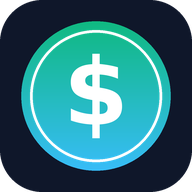

Instale o app no seu aparelho. Ele ganha um ícone na tela inicial do celular ou na área de trabalho do computador e abre como um aplicativo normal.
O app não precisa de loja (Play Store / App Store) e não instala nada além do atalho do próprio app.